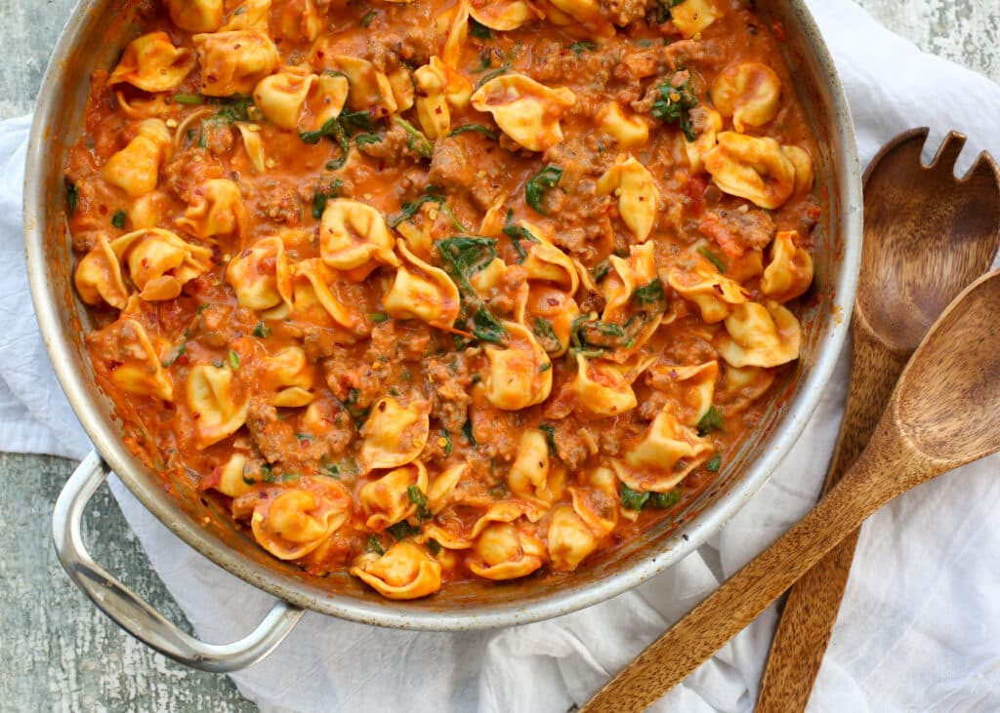

Joe's Tortellini

Description
I originally concocted this meal when making bulk meal-preps to help me gain weight. As it is very high in fat and protein, it has been a staple meal for me for years when I'm trying to put on weight. If you are on a diet or trying to lose weight, it's best to avoid even looking at this meal.
Ingredients
- 2 Family-Size bags of Four Cheese Tortellini
- 10-15 Spicy Italian Bratwursts
- Sauteed Mushrooms
- Sauteed Onions
- Sauteed Peppers
- Garlic & Herb Tomato Sauce
Steps
- Slice each brat into 5 or 6 pieces
- Begin cooking brats in a pan on low heat for about 30 minutes
- Cut mushrooms, onions, and peppers
- Place the veggies into a separate pan on medium heat
- Begin boiling 40 oz of water
- Cut open bags of tortellini and place in boiling water for 3-4 minutes, stir gingerly
- Empty out brats and veggies into strainer, place back into pan when finished
- Empty tortellini into strainer
- Place a bottom layer tortellini into generously sized bowl
- Place another layer of brats and veggies on top of that
- Smother in tomato sauce
- Repeat steaps 9, 10, & 11 until complete
- Enjoy!